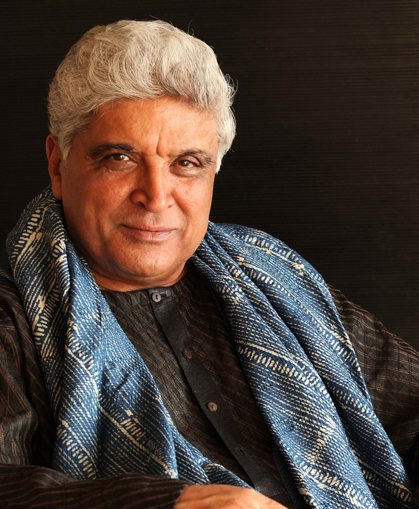
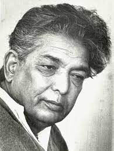
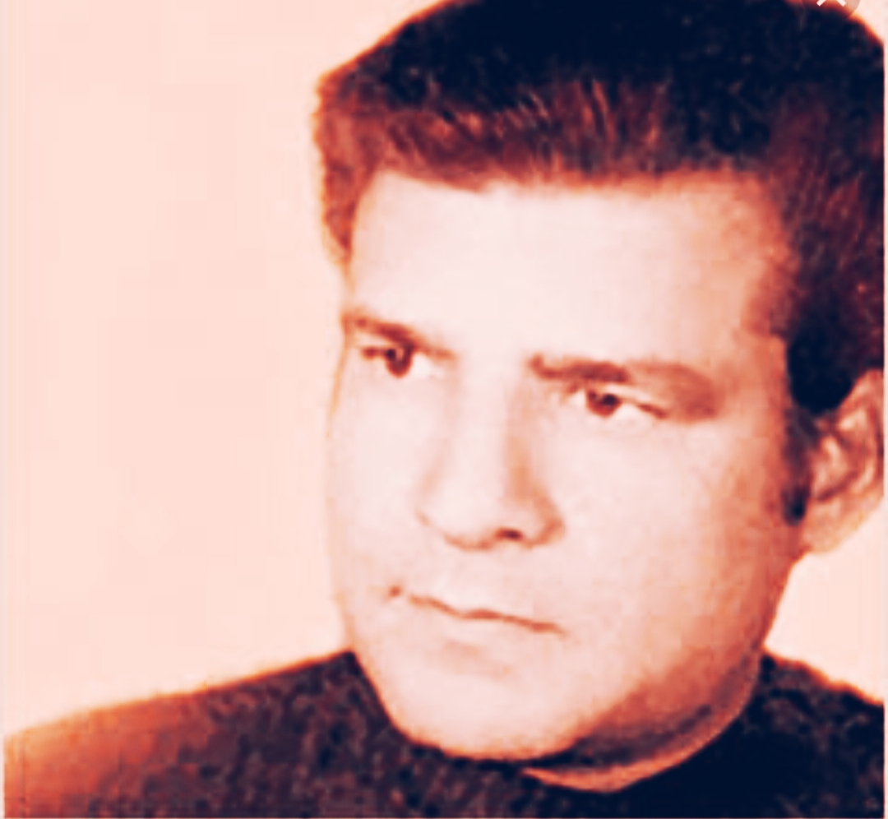
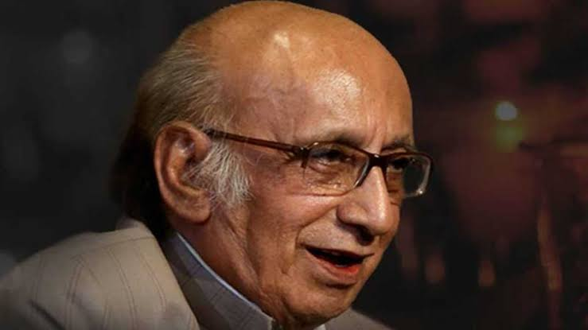
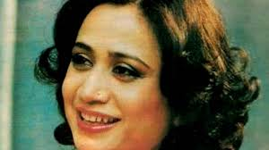

<!DOCTYPE html>
<html lang="en">

<head>
  <meta charset="UTF-8">
  <meta name="viewport" content="width=device-width, initial-scale=1.0">
  <title>Document</title>
  <link href="https://fonts.googleapis.com/css?family=Open Sans" rel="stylesheet" type="text/css">
  <link href="https://cdn.jsdelivr.net/npm/bootstrap@5.3.0/dist/css/bootstrap.min.css" rel="stylesheet"
    integrity="sha384-9ndCyUaIbzAi2FUVXJi0CjmCapSmO7SnpJef0486qhLnuZ2cdeRhO02iuK6FUUVM" crossorigin="anonymous">
  <script src="https://cdn.jsdelivr.net/npm/bootstrap@5.3.0/dist/js/bootstrap.bundle.min.js"
    integrity="sha384-geWF76RCwLtnZ8qwWowPQNguL3RmwHVBC9FhGdlKrxdiJJigb/j/68SIy3Te4Bkz"
    crossorigin="anonymous"></script>
  <link rel="preconnect" href="https://fonts.googleapis.com">
  <link rel="preconnect" href="https://fonts.googleapis.com">
  <link rel="preconnect" href="https://fonts.googleapis.com">
  <link href="https://fonts.googleapis.com/css2?family=Caveat&display=swap" rel="stylesheet">

  <link rel="stylesheet" href="https://cdnjs.cloudflare.com/ajax/libs/font-awesome/4.7.0/css/font-awesome.min.css">
  <script src="https://kit.fontawesome.com/4f15823ee8.js" crossorigin="anonymous"></script>
  <link href="https://cdn.jsdelivr.net/npm/bootstrap@5.3.0/dist/css/bootstrap.min.css" rel="stylesheet"
    integrity="sha384-9ndCyUaIbzAi2FUVXJi0CjmCapSmO7SnpJef0486qhLnuZ2cdeRhO02iuK6FUUVM" crossorigin="anonymous">
  <script src="https://apis.google.com/js/platform.js" async defer></script>
  <meta name="google-signin-client_id"
    content="953078403098-rknuj30c24lqoq0s391561jba45vurhs.apps.googleusercontent.com">
  <link rel="stylesheet" href="https://cdn.jsdelivr.net/npm/toastify-js/src/toastify.min.css">
  <script src="https://cdn.jsdelivr.net/npm/toastify-js"></script>
  <link rel="preconnect" href="https://fonts.googleapis.com">
  <link rel="stylesheet" href="test.css">
  <script src="test.js"></script>
</head>

<body>

</body>

</html>


<head>
  <link rel="stylesheet" type="text/css" href="style/style1.css">
  <title>EDC</title>
</head>

<body>
  <!-- Navbar Section  -->
  <nav class="navbar navbar-expand-lg bg-body-tertiary">
    <div class="container-fluid">
      <button class="navbar-toggler" type="button" data-bs-toggle="collapse" data-bs-target="#navbarTogglerDemo01"
        aria-controls="navbarTogglerDemo01" aria-expanded="false" aria-label="Toggle navigation">
        <span class="navbar-toggler-icon"></span>
      </button>
      <div class="collapse navbar-collapse" id="navbarTogglerDemo01">
        <ul class="navbar-nav me-auto mb-2 mb-lg-0">
          <li class="nav-item">
            <a class="nav-link active" aria-current="page" href="index.html">Home</a>
          </li>
          <li class="nav-item">
            <a class="nav-link" href="aboutus.html">Aboutus</a>
          </li>
        </ul>
        


        <div id="logo">
          
          <div class="tsh">
            Thinking starts here...
          </div>
        </div>
      </div>
  </nav>


  

  <!-- Home Section  -->
  <section id="home">
    <div class="bothHP">
      <h1 class="h-primary">Welcome to AapkeVichaar</h1>
      <p class="homePara">A place where you feel like home, a place where you can read about any poet. Here you'll
        explore yourself. This a community for the one who can contribute their poems, their
        writings, their thoughts in the society which is flowing from the past many decades and that society is
        "The
        Poets Society".</p>
    </div>
  </section>


  <section class="sliders">
    <h2 class="soundH">And that's how our poets sound</h2>
    <div id="carouselExampleCaptions" class="carousel slide">
      <div class="carousel-indicators">
        <button type="button" data-bs-target="#carouselExampleCaptions" data-bs-slide-to="0" class="active"
          aria-current="true" aria-label="Slide 1"></button>
        <button type="button" data-bs-target="#carouselExampleCaptions" data-bs-slide-to="1"
          aria-label="Slide 2"></button>
        <button type="button" data-bs-target="#carouselExampleCaptions" data-bs-slide-to="2"
          aria-label="Slide 3"></button>
      </div>
      <div class="carousel-inner">
        <div class="carousel-item active">
          
          <audio id="audio" src="John Elia ! Heart Touching ! Poetry ! Hindi ! Tum Jab Aaogi.mp3"></audio>
          <div class="carousel-caption d-none d-md-block">
            <h5>First slide label</h5>
            <p>Some representative placeholder content for the first slide.</p>
          </div>
        </div>
        <div class="carousel-item">
          
          <audio id="audioRahat" src="Mai aa gaya hu ! Rahat indori !.mp3"></audio>
          <div class="carousel-caption d-none d-md-block">
            <h5>Second slide label</h5>
            <p>Some representative placeholder content for the second slide.</p>
          </div>
        </div>
        <div class="carousel-item">
          
          <audio id="audioKumar" src="Dr Kumar Vishwas.mp3"></audio>

          <div class="carousel-caption d-none d-md-block">
            <h5>Third slide label</h5>
            <p>Some representative placeholder content for the third slide.</p>
          </div>
        </div>
      </div>
      <button class="carousel-control-prev" type="button" data-bs-target="#carouselExampleCaptions"
        data-bs-slide="prev">
        <span class="carousel-control-prev-icon" aria-hidden="true"></span>
        <span class="visually-hidden">Previous</span>
      </button>
      <button class="carousel-control-next" type="button" data-bs-target="#carouselExampleCaptions"
        data-bs-slide="next">
        <span class="carousel-control-next-icon" aria-hidden="true"></span>
        <span class="visually-hidden">Next</span>
      </button>
    </div>
  </section>


  <script>
    var audio = document.getElementById("audio");
    var img = document.getElementById("img");

    function play() {
      audio.play();
    }

    function stop() {
      audio.pause();
    }

    img.addEventListener('click', play);
    img.addEventListener('mouseover', play);
    img.addEventListener('mouseout', stop);
  </script>
  <script>
    var audioRahat = document.getElementById("audioRahat");
    var img01 = document.getElementById("img01");

    function play() {
      audioRahat.play();
    }

    function stop() {
      audioRahat.pause();
    }
    img01.addEventListener('click', play);
    img01.addEventListener('mouseover', play);
    img01.addEventListener('mouseout', stop);
  </script>

  <script>
    var audioKumar = document.getElementById("audioKumar");
    var img02 = document.getElementById("img02");

    function play() {
      audioKumar.play();
    }

    function stop() {
      audioKumar.pause();
    }
    img02.addEventListener('click', play);
    img02.addEventListener('mouseover', play);
    img02.addEventListener('mouseout', stop);
  </script>


  <section class="poetsCont">
    <h1 class="h-primaryy">From whom to Inspire...</h1>
    <div class="inspire">

<div id="content">
      <div class="card" style="width: 20rem;">
        <div class="card-body">
          
          <h5 class="card-title" class="h-secondary">John elia</h5>
          <p class="card-text">Syed Hussain Sibt-e-Asghar Naqvi, commonly known as Jaun
            Elia, was a Pakistani poet,
            philosopher, biographer, and scholar. One of the most prominent modern Urdu poets, popular
            for his
            unconventional ways, he "acquired knowledge of philosophy, logic, Islamic history, the
            Muslim Shia
            tradition, Muslim religious sciences, Western literature, and Kabbala.Elia's poetry was
            marked by a
            sense of melancholy and a deep understanding of the human condition. His ability to delve
            into the
            depths of human emotions and express them in a poignant and profound manner earned him a
            special
            place in the hearts of poetry enthusiasts.</p>
          <a href="https://en.wikipedia.org/wiki/Jaun_Elia" target="_blank" class="btn btn-primary">Know more...</a>
        </div>
      </div>
    </div>

      <div class="card" style="width: 20rem;">
        <div class="card-body">
          
          <h5 class="card-title" class="h-secondary">Card title</h5>
          <p class="card-text" class="center">Rahat Indori (1 January 1950 – 11 August 2020) was an Indian
            Bollywood lyricist, Urdu
            poet, and former professor. He was known for his poetry collections like "Do Kadam Aur Sahi"
            and
            "Maujood." Rahat's words resonated with people across borders and languages, captivating
            audiences
            with his unique style and profound expressions of human emotions. Despite his untimely
            demise due to
            cardiac arrest in August 2020, his poetry continues to inspire. Rahat Indori remains a
            beloved
            figure in the world of Urdu poetry, celebrated for his social consciousness and ability to
            connect
            with diverse audiences. </p>
          <!-- <button onclick="redirectToWebsite('https://en.wikipedia.org/wiki/Rahat_Indori')"
              class="knowmore2" class="btn btn-primary">
              Know More...
          </button> -->
          <a href="https://en.wikipedia.org/wiki/Rahat_Indori" class="btn btn-primary">Know more...</a>
        </div>
      </div>


      <div class="card" style="width: 20rem;">
        
        <div class="card-body">
          <h5 class="card-title h-secondary">Card title</h5>
          <p class="card-text center">
            Gulzar, born Sampooran Singh Kalra on 18 August 1934, is a renowned Indian poet, lyricist,
            author,
            screenwriter, and film director.
            His journey in Hindi cinema began as a lyricist in the film
            "Bandini" in 1963. Collaborating with notable music directors like S.D. Burman, R.D. Burman,
            Salil
            Chowdhury, Vishal Bhardwaj, and A.R. Rahman, Gulzar's contributions have been widely
            recognized.
            Gulzar's creative brilliance, poetic prowess, and artistic vision have earned him immense
            respect and a devoted fan base. His timeless poetry, soulful
            lyrics, and impactful storytelling continue to inspire generations in the realms of both
            film and
            literature.</p>
          <a href="https://en.wikipedia.org/wiki/Gulzar" class="btn btn-primary">Know more...</a>

        </div>
      </div>


      <div class="card" style="width: 20rem;">
        
        <div class="card-body">
          <h5 class="card-title h-secondary">Card title</h5>
          <p class="card-text center">
            Harivansh Rai Bachchan (1907-2003) was an esteemed Indian poet known for his emotionally
            charged and
            socially relevant Hindi poems. His renowned work, "Madhushala," consists of 135 verses that
            metaphorically delve into life's complexities using the imagery of a tavern and wine.
            Bachchan's
            poetry reflects profound philosophical contemplation and the transient nature of existence.
            His
            lyrical style and profound insights have established him as a revered figure in Hindi
            literature.
            "Madhushala" captivates readers through its rhythmic composition, capturing the essence of
            the human
            experience, the thirst for knowledge, and the ephemeral quality of life.</p>
          <a href="https://en.wikipedia.org/wiki/Harivansh_Rai_Bachchan" class="btn btn-primary">Know more...</a>

        </div>
      </div>


      <div class="card" style="width: 20rem;">
        
        <div class="card-body">
          <h5 class="card-title h-secondary">Card title</h5>
          <p class="card-text center">
            Faiz Ahmed Faiz (1911-1984) was a renowned Pakistani poet, writer, and intellectual, widely
            regarded
            as one of the greatest Urdu poets of the 20th century. His poetry exemplified a profound
            expression
            of human emotions, political activism, and social consciousness, addressing themes of love,
            revolution, oppression, and the quest for freedom. Faiz's words transcended borders and
            languages,
            becoming a voice for the voiceless and a symbol of resistance against injustice. Despite
            enduring
            political persecution and imprisonment, his poetry continued to inspire countless
            individuals.</p>
          <a href="https://en.wikipedia.org/wiki/Faiz_Ahmad_Faiz" class="btn btn-primary">Know more...</a>

        </div>
      </div>

      <div class="card" style="width: 20rem;">
        
        <div class="card-body">
          <h5 class="card-title h-secondary">Card title</h5>
          <p class="card-text center">
            Javed Akhtar, born on January 17, 1945, is a celebrated Indian poet, lyricist, and
            screenwriter
            known for his significant contributions to Indian cinema and literature. His versatile and
            powerful
            writing has made him one of the most respected and influential figures in the entertainment
            industry. Akhtar's lyrics in iconic songs reflect a deep understanding of human emotions,
            social
            issues and societal transformation. He has co-written critically acclaimed films as part of
            the
            famous screenwriting
            duo, Salim-Javed, with films like "Sholay," "Deewaar," etc. Akhtar's contributions to Indian
            cinema
            have earned him numerous awards, including multiple National Film
            Awards and Filmfare Awards.
          </p>
          <a href="https://en.wikipedia.org/wiki/Javed_Akhtar" class="btn btn-primary">Know more...</a>

        </div>
      </div>


      <div class="card" style="width: 20rem;">
        
        <div class="card-body">
          <h5 class="card-title h-secondary">Card title</h5>
          <p class="card-text center">
            Sahir Ludhianvi (1921-1980) was an iconic Indian poet and lyricist known for his significant
            contributions to Hindi cinema. His socially conscious and thought-provoking verses reflected
            his
            deep concern for social issues, inequality, and human emotions. Ludhianvi's lyrics combined
            simplicity, realism, and lyrical beauty, conveying a sense of rebellion and advocating for
            justice
            and equality. He collaborated with renowned music composers and penned iconic songs like
            "Kabhi
            Kabhie Mere Dil Mein" and "Tere Bina Zindagi Se." Beyond films, Ludhianvi published poetry
            collections that resonated with a wide audience and left a lasting impact on Hindi
            literature.
          </p>
          <a href="https://en.wikipedia.org/wiki/Sahir_Ludhianvi" class="btn btn-primary">Know more...</a>

        </div>
      </div>


      <div class="card" style="width: 20rem;">
        
        <div class="card-body">
          <h5 class="card-title h-secondary">Card title</h5>
          <p class="card-text center">
            Kumar Vishwas, born on February 10, 1970, is an acclaimed Indian poet, politician, and
            motivational
            speaker. Known for his captivating poetry in Hindi and Hindustani, he combines humor,
            satire, and
            social commentary. Vishwas covers themes like love, patriotism, societal issues, and
            self-reflection. However, he later distanced himself from active politics due to differences
            with the party leadership. Vishwas has gained popularity through television shows, comedy
            programs,
            and poetry competitions, building a wide fan base. As a motivational speaker, he delivers
            inspirational talks, encouraging individuals to pursue their dreams and overcome challenges.
          </p>
          <a href="https://en.wikipedia.org/wiki/Kumar_Vishwas" class="btn btn-primary">Know more...</a>

        </div>
      </div>


      <div class="card" style="width: 20rem;">
        
        <div class="card-body">
          <h5 class="card-title h-secondary">Card title</h5>
          <p class="card-text center">
            Kaifi Azmi (1919-2002) was a renowned Indian Urdu poet, lyricist, and social activist. Known
            for his
            socially conscious poetry and lyrics, he played a prominent role in the Progressive Writers'
            Movement. Azmi's verses addressed social inequality and the struggles of the marginalized.
            As a
            lyricist in the Indian film industry, he collaborated with renowned composers and
            contributed to
            films like "Garm Hava" and "Kaagaz Ke Phool," known for their depth and emotional
            complexity. Beyond
            his literary achievements, Azmi actively engaged in social and political activism,
            advocating for
            workers' rights and opposing communalism.
          </p>
          <a href="https://en.wikipedia.org/wiki/Kaifi_Azmi" class="btn btn-primary">Know more...</a>

        </div>
      </div>

      <div class="card" style="width: 20rem;">
        
        <div class="card-body">
          <h5 class="card-title h-secondary">Card title</h5>
          <p class="card-text center">
            Dushyant Kumar (1933-1975) was a renowned Hindi poet known for his powerful and socially
            conscious
            works. Born in Bijnor, Uttar Pradesh, his poetry addressed social inequality, corruption,
            and the
            struggles faced by the marginalized. With simplicity, directness, and raw emotions, his
            verses
            resonated with readers, offering inspiration and a call to action. Notable poems include "Ho
            Gayi
            Hai Peer Parvat Si". Despite his life being tragically cut short at the age of 42, his
            poetry
            continues to leave an indelible mark on Hindi literature. He remains a celebrated figure,
            inspiring
            audiences to question societal norms and work towards a more just and inclusive world.
          </p>
          <a href="https://en.wikipedia.org/wiki/Dushyant_Kumar" class="btn btn-primary">Know more...</a>

        </div>
      </div>

      <div class="card" style="width: 20rem;">
        
        <div class="card-body">
          <h5 class="card-title h-secondary">Card title</h5>
          <p class="card-text center">
            Nida Fazli (1938-2016) was an acclaimed Urdu poet and lyricist from India. His profound and
            introspective poetry earned him widespread recognition, making him one of the most
            celebrated poets
            of his time. Fazli explored themes of love, loss, existential questions, and social issues,
            displaying a deep understanding of human emotions. As a lyricist, he collaborated with
            renowned
            composers like Jagjit Singh, R.D. Burman, and A.R. Rahman, creating timeless songs like
            "Hoshwalon
            Ko Khabar Kya" and "Kabhie Kisi Ko Mukammal Jahaan Nahi Milta." Fazli's poetic style was
            characterized by simplicity, clarity, and the ability to evoke profound emotions, resonating
            with a
            wide audience.
          </p>
          <a href="https://en.wikipedia.org/wiki/Nida_Fazli" class="btn btn-primary">Know more...</a>

        </div>
      </div>


      <div class="card" style="width: 20rem;">
        
        <div class="card-body">
          <h5 class="card-title h-secondary">Card title</h5>
          <p class="card-text center">
            Parveen Shakir (1952-1994) was a prominent Pakistani Urdu poetess known for her captivating
            and
            thought-provoking poetry. Born in Karachi, she made a significant contribution to
            contemporary Urdu
            literature with her distinctive style and innovative approach. Shakir's poetry focused on
            love,
            romance, and the complexities of relationships, reflecting a sincere and feminist
            perspective. She
            published acclaimed collections like "Khushbu," "Sad-barg," and "Kaf-e-Aina" and received
            the
            prestigious Pride of Performance Award.
          </p>
          <a href="https://en.wikipedia.org/wiki/Parveen_Shakir" class="btn btn-primary">Know more...</a>

        </div>
      </div>


      <br><br>
      <div class="more">
        Get to know more poets! <a href="https://en.wikipedia.org/wiki/List_of_Urdu_poets" target="_blank">Click
          here</a>
      </div>

    </div>
    </div>
  </section>
  <section id="clients-section">
    <hr>
    
    <div class="ic">
      <i class="fa fa-google" aria-hidden="true" style="font-size: 43px; cursor: pointer;" onclick="openMail()"></i>
      <i class="fa fa-git" style="font-size:50px" onclick="redirectToWebsite('https://github.com/KESHAV-AV2003')"></i>
      <i class="fa fa-instagram" style="font-size:50px"
        onclick="redirectToWebsite('https://www.instagram.com/aapke_vichaar/')"></i>
      <i class="fa fa-linkedin-square" style="font-size:50px"
        onclick="redirectToWebsite('https://www.linkedin.com/in/keshav-srivastava-757303174/')"></i>

    </div>
    <script src="https://cdn.jsdelivr.net/npm/bootstrap@5.3.0/dist/js/bootstrap.bundle.min.js"></script>

  </section>
  <footer>
    <div class="copyright">
      Copyright &copy; www.AapkeVichaar.com. All right reserved!
    </div>
  </footer>
  </section>
  
</body>
